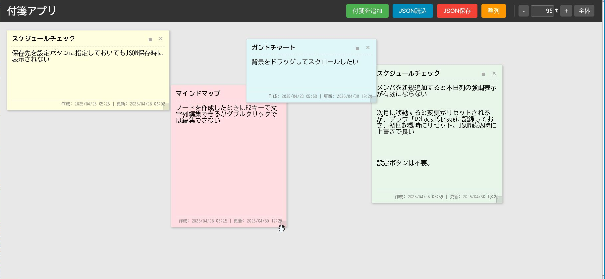

そのアイデア、AIと共に形にしませんか？
JavaScriptの力と生成AIのサポートがあれば、コーディング経験がなくても高度なWebアプリケーションを創り出せます。このサイトでは、その実例となる5つのツールと、AIを活用した開発プロセスを紹介します。
アプリを試す AI活用ストーリーを読むAIと創り上げた多機能Webアプリ



コードが書けなくても、アイデアは形にできる
「こんなツールがあったら便利なのに…」そう思ったことはありませんか？
これらのアプリは、プログラミングの専門知識がなくても、Google AI Studioのような生成AIとの対話を通じて開発されました。初期の簡単なプロトタイプから、要件を追加し、試行錯誤を繰り返すことで、多機能なWebアプリケーションへと進化させることができたのです。
あなたも、AIをパートナーにして、頭の中のアイデアを実現してみませんか？
AIとの開発ストーリーをもっと知る